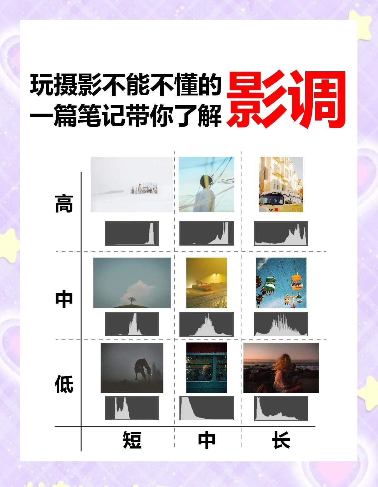

影调的秘密

影调，其实它就是我们常说的光影效果。简单来说，影调就是照片的基调，通过处理照片的明暗关系来塑造造型、表达情感和渲染氛围。所以，调整影调其实就是处理照片的黑白灰关系。
根据明度，我们可以把影调分为高、中、低三种；而根据像素分布跨度，又可以分为长、中、短三种。这样一组合，就有9种影调类型啦！每种类型都有它独特的风格和感觉。
高长调：热烈、刺激、果断、刚强 🔥
高中调：唯美、干净、明亮、愉快 🌞
高短调：纯洁、高尚、文艺、天真、浪漫 🌸
中长调：层次感强，细节多，柔和 🌳
中中调：柔和、舒适、唯美 🌼
中短调：平和、安静，带点文艺和唯美 🎶
低长调：有氛围感 🌌
低中调：深沉、神秘、稳重、凝重 🏰
低短调：神秘、恐怖、深不可测、自信 👻
从大调性来说，高调的作品给人一种高雅、纯真、美好、阳光的感觉；中调的作品则传递出柔和、唯美、舒适、细腻的感觉；而低调的作品则会给人神秘、恐怖、深沉、大气、凝练、岁月的感觉。
版权声明：内容均源于网络分享整理，如有侵权请及时联系删除。